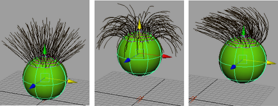

可将弹簧轻松地添加到具有管的笔划中，让管能够反应性地进行互连运动。通过对具有弹簧管曲面的移动设置动画，管会相应地作出反应。
将弹簧行为添加到笔划时，“Paint Effects”将创建一个表达式，使管与弹簧的行为类似。在“表达式编辑器”(Expression editor)中可以编辑该表达式。

将弹簧行为添加到笔刷
- 选择笔划。笔划必须位于可绘制的曲面上。有关详细信息，请参见在对象上绘制。
- 选择“生成 > 笔刷动画 > 生成笔刷弹簧”(Generate > Brush Animation > Make Brush Spring) >
 。
。 此时将打开“生成笔刷弹簧选项”(Make Brush Spring Options)窗口。
若要查看弹簧的效果，请移动到“开始帧”(Start Frame)之后的某一帧（至少两帧之后），然后变换对象。例如，如果将“开始帧”(Start Frame)设定为第 2 帧，则应移动到第 5 帧。
- 切换到场景视图（如果不在该视图中），然后将曲面的移动设为关键帧。有关详细信息，请参见 Maya 中的动画。
- 单击“向前播放”(Play Forward)按钮，检查管的行为是否与预期相同。
- 渲染动画。请参见使用“Paint Effects”笔划渲染场景。
编辑弹簧设置
- 选择笔划。
- 选择“生成 > 笔刷动画 > 生成笔刷弹簧”(Generate > Brush Animation > Make Brush Spring) > 。
此时将打开“生成笔刷弹簧选项”(Make Brush Spring Options)窗口。
- 修改设置，然后单击“创建”(Create)。“Paint Effects”使用已修改的设置，将现有表达式替换为新表达式。
从笔划移除弹簧行为
- 选择笔划。
- 打开表达式编辑器（“窗口 > 动画编辑器 > 表达式编辑器”(Windows > Animation Editors > Expression Editor)）。
- 应用“表达式名称”(Expression Name)过滤器（“选择过滤器 > 按表达式名称”(Select Filter > By Expression Name)）。
- 在“表达式”(Expressions)下，为笔划选择表达式。
- 单击“删除”(Delete)按钮。
烘焙弹簧动画
- 选择“生成 > 笔刷动画 > 烘焙弹簧动画”(Generate > Brush Animation > Bake Spring Animation) > 。此时将打开“烘焙笔刷弹簧动画”(Bake Brush Spring Animations)窗口。
- 在“开始帧”(Start Frame)框中，输入动画中要烘焙的第一帧。
- 在“结束帧”(End Frame)框中，输入动画中要烘焙的最后一帧。
- 单击“烘焙”(Bake)。因为“Paint Effects”会为指定范围内的每一帧烘焙表达式，因此弹簧行为能正确地进行渲染。